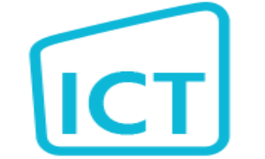
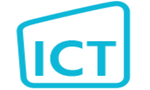

Portfolio
 

Mijn naam is Julian Vink en ik ben 17 jaar oud. Ik ben in Zwijndrecht geboren, maar ik heb meer dan 10 jaar in Brazilië gewoond vanwege mijn moeder die uit Brazilië komt. In januari 2017 kwam ik terug naar Nederland en ben begonnen met de opleiding applicatieontwikkelaar. Sindsdien ben ik erg geïnteresseerd geraakt in het maken van websites en programmeren van allerlei applicaties.

In de beroepsopleiding Applicatie- en mediaontwikkelaar leer je applicaties ontwerpen en ontwikkelen. Je leert na te denken over applicaties en een helder ontwerp te maken voor een programma. In het eerste leerjaar ben je volledig op school. In het tweede leerjaar ga je in de vijfde en zesde periode stage lopen.
| Week | Opdrachten |
|---|---|
| 1 | Lab 1 |
| 2 | Lab 2 |
| 3 | Lab 4/Lab 5/Lab 6/Toets |
| 4 | Lab 8/Lab 9 |
| 5 | Lab 11/Lab 12 |
| 6 | Lab 15 |
| 8 | Portfolio website |
Terug naar de homepagina